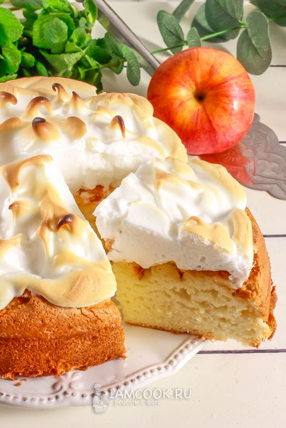
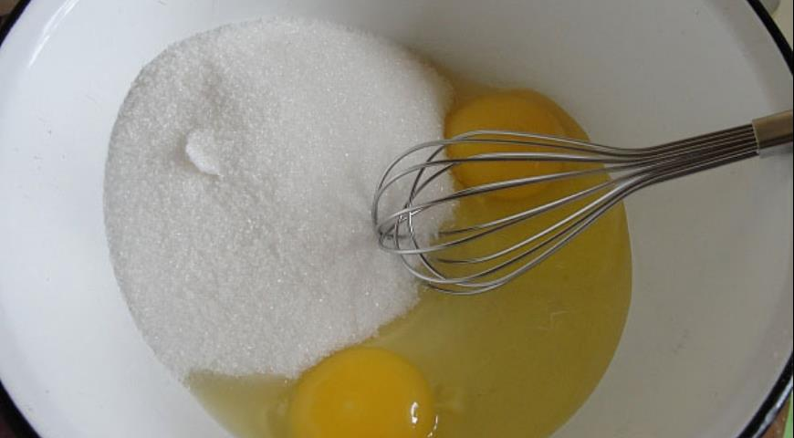
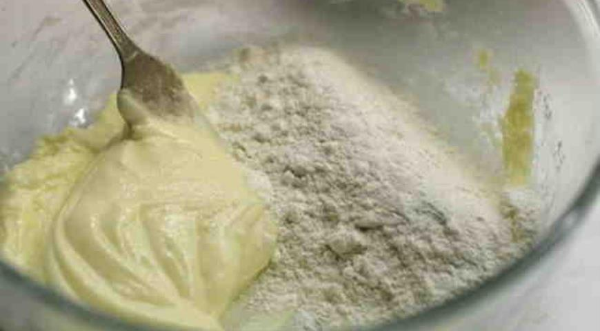
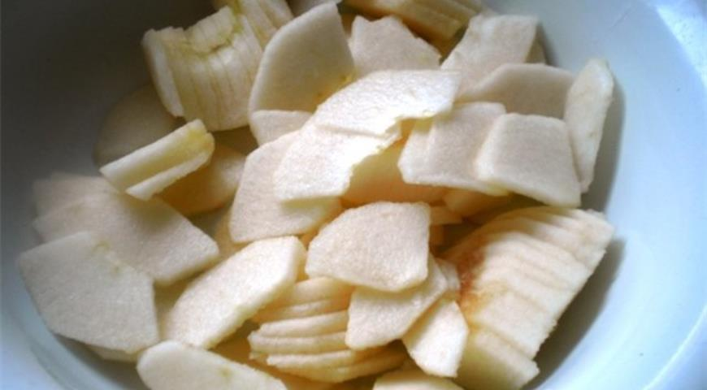
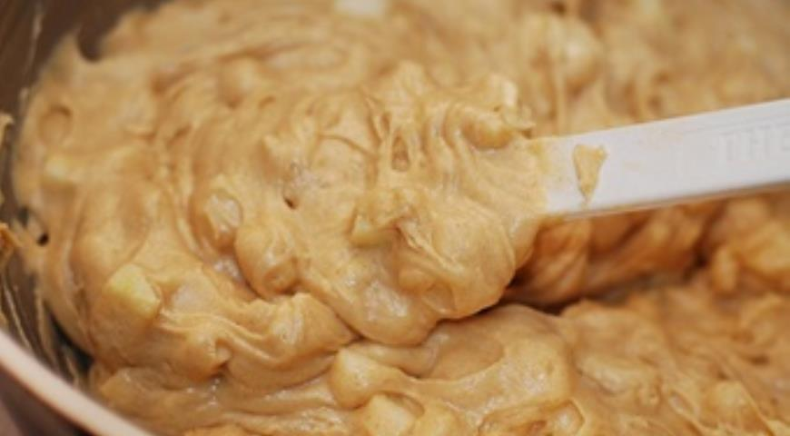

Классическая шарлотка с яблоками
Классическая шарлотка с яблоками — пирог очень простой в приготовлении, но при этом вкусный, потому невероятно популярный. Печь его лучше осенью, так как именно местные сезонные фрукты зимних сортов идеально подходят для начинки. Почему они? Потому что такие яблоки обладают ярким вкусом с приятной кислинкой и насыщенным ароматом, которых зачастую очень не хватает «круглогодичным» плодам из супермаркетов. В общем, упустить счастливую возможность получить максимальные вкусовые впечатления от классической шарлотки нельзя ни в коем случае. Приготовьте этот пирог по нашему рецепту и скорее зовите близких к столу!
ИНГРЕДИЕНТЫ
- Мука - 1 стакан
- Сахар - 1 стакан
- Яйца - 3 шт.
- Яблоки - 3-4 шт.
- Ванилин (ванильный сахар) – по вкусу
- Сода пищевая - щепотка
ПОШАГОВЫЙ РЕЦЕПТ ПРИГОТОВЛЕНИЯ
Шаг 1
Готовим тесто классической шарлотки. В чашу миксера вбиваем яйца. Добавляем сахар. Взбиваем миксером сначала на средней, затем на высокой скорости до получения светло-желтой массы однородной консистенции.
Шаг 2
В сладкую яичную смесь добавляем муку, предварительно просеянную через мелкое сито со щепоткой соды и ванилином (ванильным сахаром). Снова взбиваем миксером. Тесто шарлотки готово.
Шаг 3
Готовим начинку шарлотки. Яблоки моем и каждое разрезаем пополам. Удаляем сердцевины с семенами. Мякоть очищаем и нарезаем небольшими кубиками или ломтиками произвольной формы.
Шаг 4
Яблоки добавляем в тесто шарлотки и осторожно перемешиваем. Выливаем получившуюся массу в форму, смазанную любым жиром, и отправляем в духовку, нагретую до 190°C, на 30 минут.
ПОЛЕЗНЫЙ СОВЕТ
Классическую шарлотку с яблоками в горячем виде можно дополнить шариками сливочного мороженого, в идеале пломбира. Получится очень вкусно, стоит попробовать!
КСТАТИ
В тесто классической шарлотки с яблоками очень часто добавляют молотую корицу. Мы бы советовали сделать это непременно, потому что эта пряность удивительно гармонично «звучит» в таком пироге.